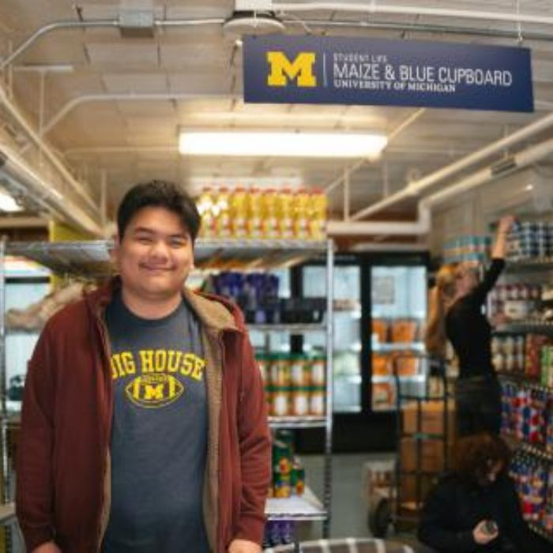

Our Mission

To ensure members of the University of Michigan community—whether on a tight budget or physically restrained from getting to a grocery store—receive equitable access to healthy, nutritious, and nourishing food and the ability to prepare it for themselves or others.
What We Provide
- Food: Produce, dairy, meat, bread, frozen and shelf-stable foods (e.g., rice, canned goods, tuna, etc.)
- Kitchen & Cooking: Dishes, silverware, pots & pans, Tupperware, cutting boards, knives, and other kitchenware
- Personal & Household: Trash bags, toilet paper, cleaning supplies, hygiene products, school supplies, baby items, and more
- Support: Get connected to campus experts like CAPS, Dean of Students, and Financial Aid, as well as SNAP
Hours and Location
Located in the basement of the Betsy Barbour Residence Hall, enter via the Maynard entrance. Contact us
for ramp or elevator access.
Address: 420 S State St, Ann Arbor, MI 48109
Hours of Operation:
- Sunday: 2pm to 6pm
- Monday through Thursday: 3pm to 7pm
- Friday: 12pm to 7pm
- Saturday: Closed